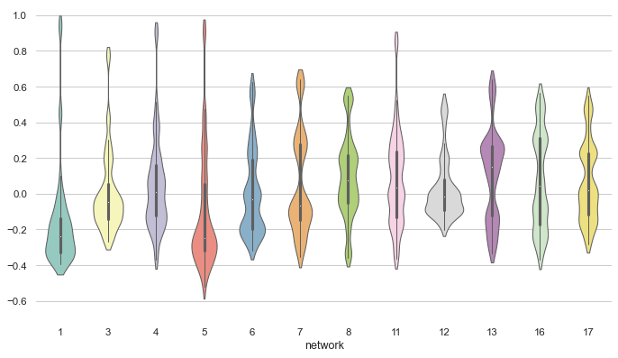

Violinplot from a wide-form dataset¶
seaborn components used: set_theme(), load_dataset(), violinplot(), despine()
import seaborn as sns
import matplotlib.pyplot as plt
sns.set_theme(style="whitegrid")
# Load the example dataset of brain network correlations
df = sns.load_dataset("brain_networks", header=[0, 1, 2], index_col=0)
# Pull out a specific subset of networks
used_networks = [1, 3, 4, 5, 6, 7, 8, 11, 12, 13, 16, 17]
used_columns = (df.columns.get_level_values("network")
.astype(int)
.isin(used_networks))
df = df.loc[:, used_columns]
# Compute the correlation matrix and average over networks
corr_df = df.corr().groupby(level="network").mean()
corr_df.index = corr_df.index.astype(int)
corr_df = corr_df.sort_index().T
# Set up the matplotlib figure
f, ax = plt.subplots(figsize=(11, 6))
# Draw a violinplot with a narrower bandwidth than the default
sns.violinplot(data=corr_df, palette="Set3", bw=.2, cut=1, linewidth=1)
# Finalize the figure
ax.set(ylim=(-.7, 1.05))
sns.despine(left=True, bottom=True)